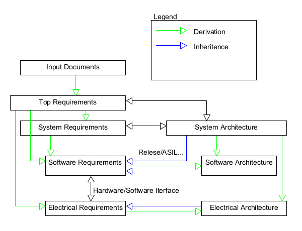

1.1. Implementation Traceability

1.2. Requirement fields default values and inheritance
If not specified in requirement ASIL, CAL Level, Release, Variants are Inherited from system/software/electrical architecture linked to element
2. System Process description
2.1. SYS1 - REQUIREMENT ELICITATION
requirement
After reading this you should know what and how to do this job
Activities and methods here described